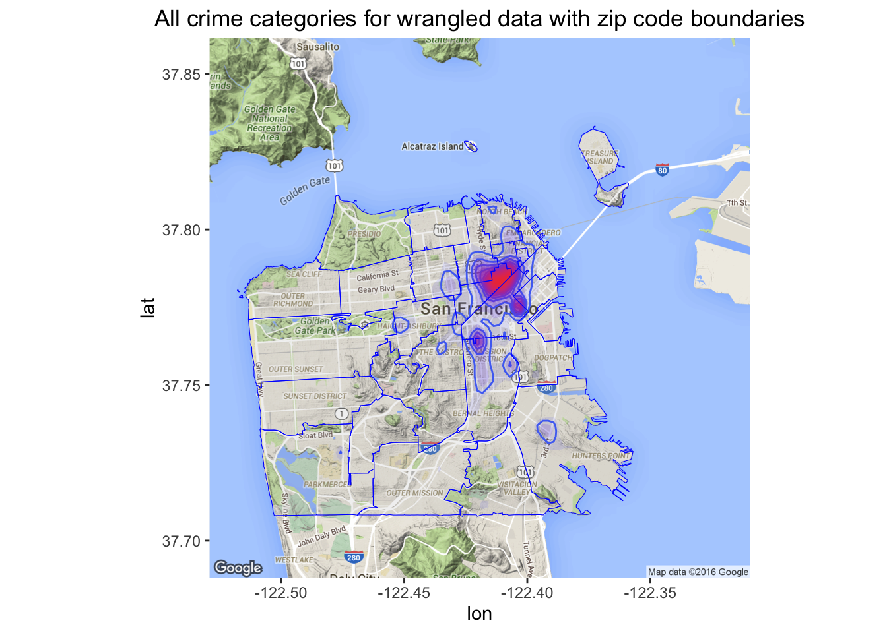
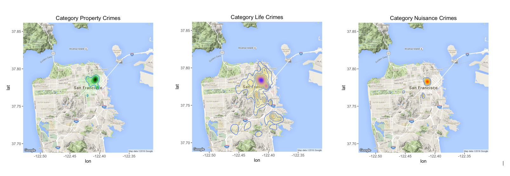
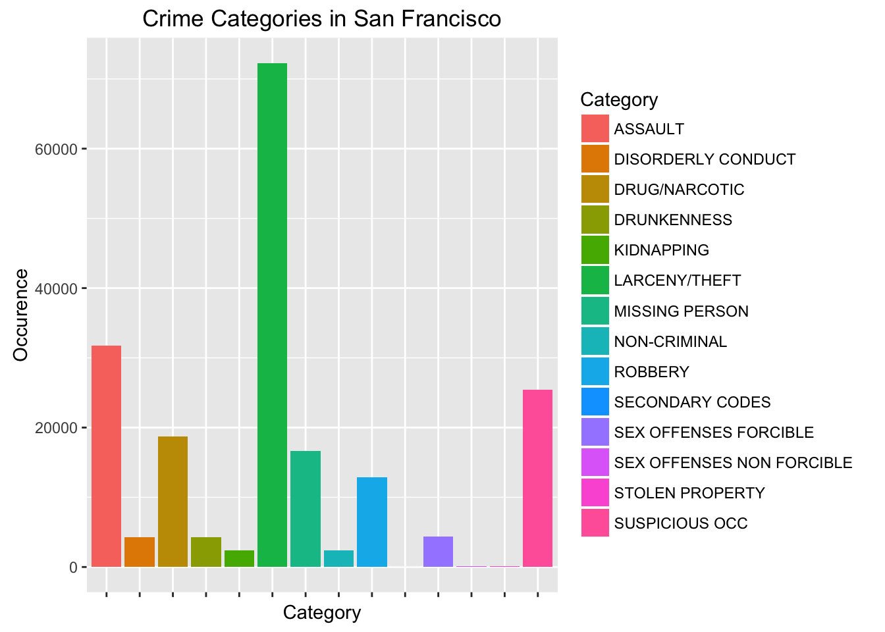
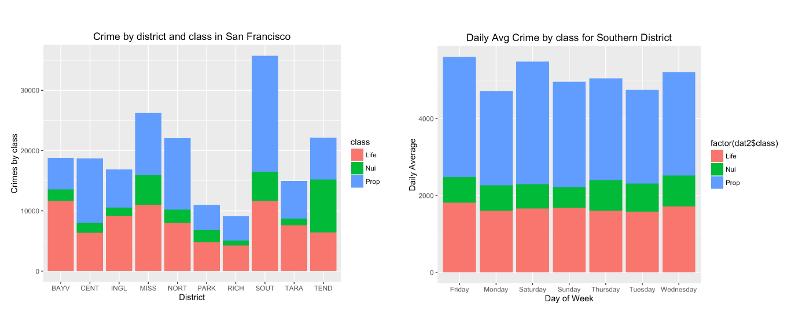
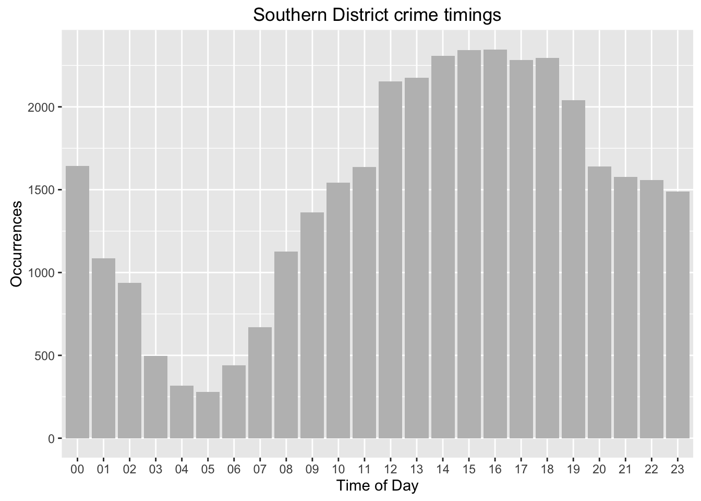
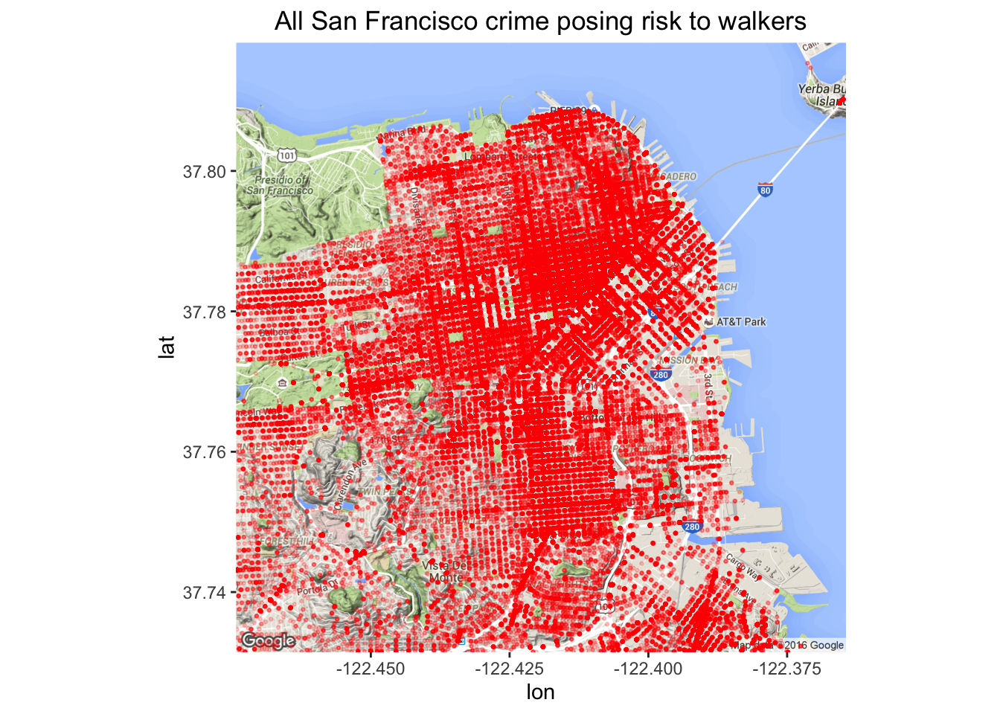
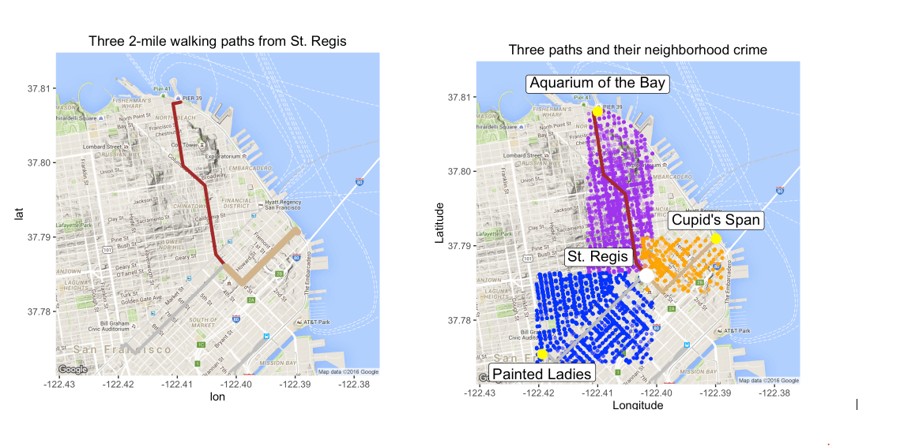
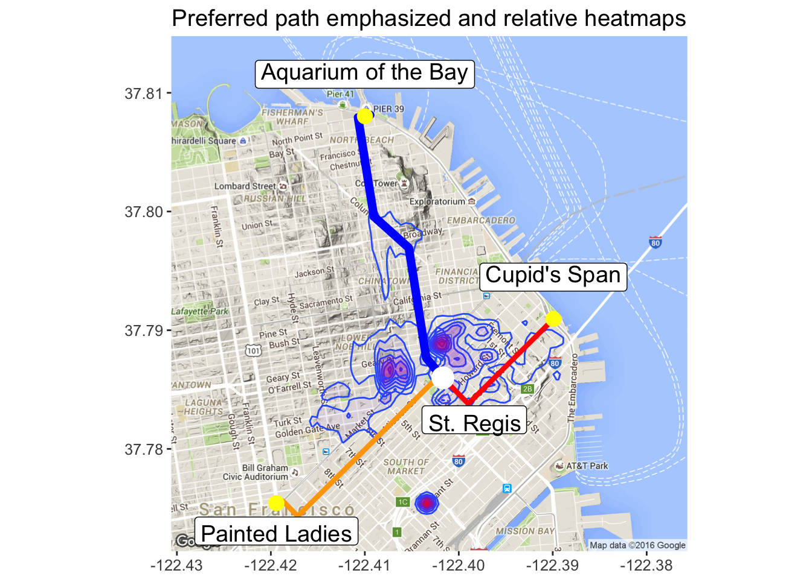

which route would three-amigos choose ?
Background and Motivation:
Our project motivation was to analyze data that was easy to relate to.
Hence starts the journey of three amigos, with the accomodation set at St.Regis in downtown SFO each of them had they own favourite destiantion in mind for a quick jog but would only do so if other two are also intrested in the same spot. Hmm ... conflict of interest and also how would one convince other or both to agree with one's choice. They started flipping coins and rolling dice but none would give them the answer they seek, here comes data analytics to the rescue.
With SFO crime data readily available,we wanted to see if we can identify some relationships with likely variables and come up with practical recommendations as to which route would be the safest.
Project Objectives:
Analyze the San Francisco Crime data set provide by Kaggle.com to predict the likelihood of certain crime occurances and suggesting a better path among the 3 chosen routes which start with a common starting point St.Regis and ending in either Aquarium of the Bay,Paintied Ladies or Cupid's Span respectively.
Approach:
Examine SFO Crime dataset,wrangle data to a level where its only relevant to our end objective i.e., to tidy and collect observations which affect our mode of transportation which is WALKING\JOGGING. Wrangle it, Analyze it and finally Visualize it to determine relationship between variables (if any) and conclude our objective by defining 1-3 walking paths by overlaying statistical likelihood of crime occurrences and suggesting better path. We intend to use the ‘training’ data set, as it is the only full-featured data set.
Analysis:
- Data Wrangling :
We started working with the SFO Crime training dataset readily available, initial challenge was to identify the categories which are related to our end objective. Provided dataset had multiple categories labled as "Category" and each category was further subdivided in to multiple sub-categories here labled as "Descript" based on the act commited. There were few "Category"s and their "Descript"s which were outright not relevent to our cause and hence were filtered out to mention few "BAD CHECKS", "GAMBLING" etc.,
Our second phase of wrangling,was to closely examine "Descript"s and to filter out any non-relevant descriptions from this Category, for example "ASSAULT" category though is relevant to our case, act's such as "inflict injury on cohabitee", "threatening phone calls" and similar others are not relevant to a person whose mode of tranportation is WALKING\JOGGING from point A to point B.
Our third and final phase of wrangling, was to filter out unneccessary obervations based on "Descript"s identified in second stage of filtering and making sure we arrive to final dataset which is relevant to our end objective of WALKING\JOGGING.
we have initially started around 875K observations and have systematically wrangled data to arrive at around 195K crime observations which have an impact on person WALKING\JOGGING in the areas discussed
- Exploratory Analysis :
Using the finalized wrangled data below shows all categories of crime, which clearly shows concentration near the northeastern section of the city. This map provided us with the guidance on which areas we needed to concentrate for further analysis .
For reference, we’ve provided zip code boundaries as overlay.
We have further created 3 categories based on the severity and threat level to life:
Property : Theft, Robbery, etc.,
Life : Kidnapping, Sex Offenses, etc.,
Nuisance : Loitering, Drunkeness, etc.,
Life related crimes such as assault, kidnapping, missing persons, and sex offenses have a much wider footprint mainly due to the number and prevalence of assault related crimes. Whereas nuisance related crimes such as disorderly conduct, drug/narcotic, drunkenness, and non-criminal are very much concentrated in one region. Below map provides crime density views of the same.
Per the histogram below, larceny and theft crime top the chart at above 70,000 occurrences, followed by assault and other suspicious activities.
Below we have tried to point out few interesting trends of crime by class,district and day. Not only does the southern district have the largest number of crimes, it has significantly higher property related crimes. Since southern district has some interesting trends we decided to delve into this district a bit further.
Daily Average Crime by class for Southern DistrictOn Average, on Fridays, in the southern district, there are little under 6000 crimes. Approximately 60% are related to property, 10% to nuisance and 30% to life related crimes. The second highest daily crime rate falls on Saturday followed by, surprisingly, Wednesday!
The chart below shows the frequencies of crime within a given hour for the Southern District. We found it interesting that the highest occurrences fall in the afternoon between noon and 5 pm with the peak between 3-4pm. The lowest occurrence is in the early morning hours between 4-5 am.
 - Proximity Analysis :
As seen above in the Data Wrangling and Exploratory Analysis, we have arrived at understanding the crime that negatively impacts pedestrians in San Francisco. The data set also provides coordinates for where the crime was reported, so we first wanted to start with a ‘birds eye view’.
Even though we can see all this crime, the Three Amigos decide that we still want to venture from our hotel at the St. Regis in the Southern district for a two mile walk. We have three options: 1) walk 2 miles to the Aquarium of the Bay, 2) walk 2 miles to the Painted Ladies, or 3) walk a 2 mile round trip to Cupid’s Span and back.
On the first image on the left, you’ll see that we have outlined the three paths heading North, South-West, or East. Then to the right, the same three paths are now associated with the crime of their respective neighborhood crime. The neighborhood crime is close enough in proximity to pose a threat to us as we walk.
So the desire is to pick the route with the least risk as a try to improve our health with a brisk walk.
In order to figure out which path posed the least risk, we pulled out our calculators. We decided to consider the three classifications of crime in order of severity life, property, and nuisance by factoring each in a descending scale (6, 3, & 1 respectively). To this end, we were able to add the three respective path’s neighborhood crime into a weighted score based on this adjusted scale. The walk to the Aquarium of the Bay proved to be the safest route.
To show the relative crime density points, we overlaid a heat map of the respective neighborhood crime. Based upon this, we’ll be walking a little bit faster in a few sections of our walk to the Aquarium. Even though we’ve determine the lower risk path, it still has risk.
